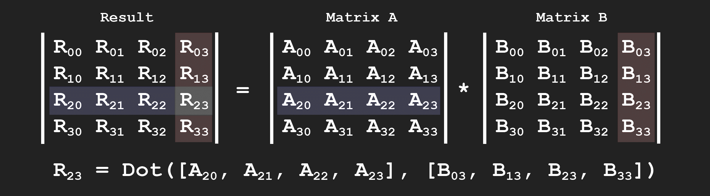

Matrix Multiplication
Matrix multiplication has a few important properties
- Matrix multiplication IS NOT commutative
- This means multiplication order matters.
- Given matrices \(A\) and \(B\), then \(AB \neq BA\)
- Matrix multiplication is associative
- Multiplication is the same regardless of grouping.
- Given matrices \( A \), \( B \) and \( C \), then \(A(BC) = (AB)C \)
- Matrix multiplication is distributive
- You can multiply a sum by multiplying each addend separately, then add the products
- Given matrices \( A \), \( B \) and \( C \), then \(A(B + C) = AB + AC\)
- Given matrices \( A \), \( B \) and \( C \), then \((A + B)C) = AC + BC\)
- Some matrices, not all have multiplicative identity. More on this in section 7, Invert.
The fact that matrix multiplication is not commutative coupled with the major and storage issues adds another level of confusion. The major of a matrix actually affects multipliation order. Multiplication order in games is often associated with OpenGL vs DirectX style multiplication, which like the OpenGL/DirectX comparison with majors is over simplifying the problem.
When multiplying two matrices, for example a 2x4 and a 3x1 matrix they have inner and outer dimensions. The inner dimensions are the numbers in the middle, 4 and 3. The outer dimensions are the numbers on the edges, 2 and 1.
Two matrices can only be multiplied together if their inner dimensions match. The result of a matrix multiplication will have the outer dimensions of the matrices being multiplied. For example, a 3x1 and a 1x2 matrix could be multiplied together and the resulting matrix would be a 3x2 matrix. These are some additional examples:
- A 2x3 and a 3x1 matrix can be multiplied. The result is a 2x1 matrix.
- A 3x2 and a 3x1 matrix can not be multiplied. The inner dimensions are different.
- A 4x1 and a 1x4 matrix can be multiplied. The result will be a 4x4 matrix.
- A 4x4 and a 1x4 matrix can not be multiplied. The inner dimensions are different.
- A 4x4 and a 4x1 matrix can be multiplied together. The result is a 4x1 matrix.
Multiplication order
Matrix multiplication is broken down into two categories Pre Multiplication and Post Multiplication. These names describe the order in which multiplication happens. Given matrices \(A\), \(B\) and \(C\), the result of \(M = ABC\) changes weather pre or post multipliation is used.
With pre-multiplication, multiplication is from left to right. Using the above example, \(A\) and \(B\) are multiplied together, the result is multiplied by \(C\) and stored in \(M\). In games, pre multiplication is often called Direct X style multiplication.
With post-multiplication, multiplication is from right to left. Still using the same example, \(C\) and \(B\) are multiplied together, the result is multiplied by \(A\) and stored in \(M\). In games, post multiplication is often refered to as OpenGL style.
Given \(X = AB\), the equation could be described as \(A\) is post multiplied by \(B\) or \(B\) is pre multiplied by \(A\). Both would give different results.
There is no right or wrong choice here. Matrix major, storage and multiplication order are all a matter of convention and consistency. You need to pick a convention that makes sense to you and stick to it. For me (and the code we write in this blog) that means column major matrices with column storage using column vectors (more about column vectors in Section 6. Transforming Vectors).
Theory
$$ (AB)_{ij} = \sum_{m}^{k=1} A_{ik}B_{kj} $$
To multiply two matrices, \(X\) = \(AB\), pretend that \(A\) is a row matrix and \(B\) is a column matrix. Find any element, \(X_{ij}\) in the result matrix by taking the dot product of row \(i\) from matrix \(A\) and column \(j\) from matrix \(B\). The following image demonstrates this:
Implementation
While it's possible to implement matrix multiplication using loops, most games implement it using inline SIMD code. Matrix multiplication is done many, many times per frame, it's vital that this function be as fast as possible. The code below is a minimally optimized reference implementation.
mat4 Mul(mat4 a, mat4 b) {
mat4 result;
// Column 0
result[0] = a[0] * b[0] + a[4] * b[1] + a[8] * b[2] + a[12] * b[3];
result[1] = a[1] * b[0] + a[5] * b[1] + a[9] * b[2] + a[13] * b[3];
result[2] = a[2] * b[0] + a[6] * b[1] + a[10] * b[2] + a[14] * b[3];
result[3] = a[3] * b[0] + a[7] * b[1] + a[11] * b[2] + a[15] * b[3];
// Column 1
result[4] = a[0] * b[4] + a[4] * b[5] + a[8] * b[6] + a[12] * b[7];
result[5] = a[1] * b[4] + a[5] * b[5] + a[9] * b[6] + a[13] * b[7];
result[6] = a[2] * b[4] + a[6] * b[5] + a[10] * b[6] + a[14] * b[7];
result[7] = a[3] * b[4] + a[7] * b[5] + a[11] * b[6] + a[15] * b[7];
// Column 2
result[8] = a[0] * b[8] + a[4] * b[9] + a[8] * b[10] + a[12] * b[11];
result[9] = a[1] * b[8] + a[5] * b[9] + a[9] * b[10] + a[13] * b[11];
result[10] = a[2] * b[8] + a[6] * b[9] + a[10] * b[10] + a[14] * b[11];
result[11] = a[3] * b[8] + a[7] * b[9] + a[11] * b[10] + a[15] * b[11];
// Column 3
result[12] = a[0] * b[12] + a[4] * b[13] + a[8] * b[14] + a[12] * b[15];
result[13] = a[1] * b[12] + a[5] * b[13] + a[9] * b[14] + a[13] * b[15];
result[14] = a[2] * b[12] + a[6] * b[13] + a[10] * b[14] + a[14] * b[15];
result[15] = a[3] * b[12] + a[7] * b[13] + a[11] * b[14] + a[15] * b[15];
return result;
}